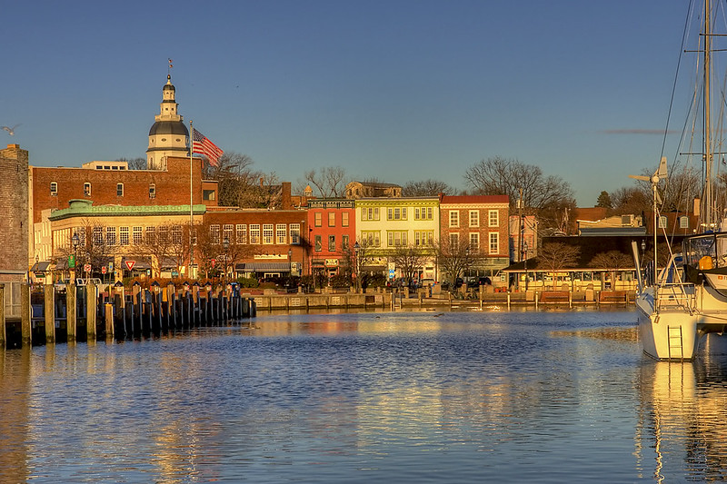

Oscar's Coffee Annapolis
Address: 105 Eastern Ave, Annapolis, MD 21403
Website:
wheresoscar.com

Founded by local coffee and dog lovers Will and Garret, Oscar's coffee is a coffee shop in the Eastport neighborhood of Annapolis, who "believe in a simple but excellent coffee experience" and aim to foster a sense of community.
The shop serves seasonal drinks, waffles, bagels, and treats for dogs. The shop operates out of a restored 1974 Shasta RV and offers views of the Horn Point Harbor Marina with outdoor seating available.
| Region | Waterfront View | Walkable to Waterfront |
|---|---|---|
| Central | Yes | Yes |
3 Things to Try:
- Café Au Lait
- Orange Hibiscus Iced Tea
- Liège Waffle
Oscar’s Coffee is an absolute gem. The atmosphere alone makes it worth the visit—such a tranquil spot right on the water where you can actually slow down and enjoy your coffee. It’s the kind of place you want to sit for a while and just take everything in.
-David Lopez
The menu is large and they usually have seasonal drinks. My large hazelnut latte was really good. It was creamy, just a tad sweet, and well brewed.
-Austin Graff
